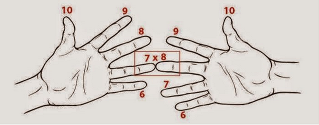
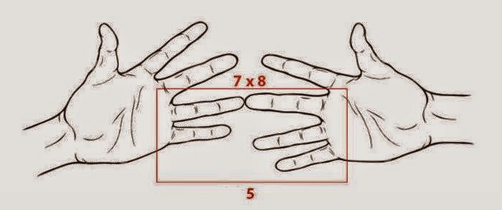
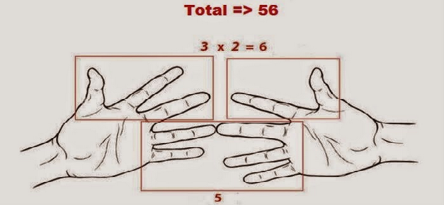

Cara Berhitung Yang Tidak di Ajarkan di Sekolah
1. Menggunakan jarimu untuk menghitung perkalian 6,7,8,9.
-
7 x 8 ??? 10 – 7 =3, jadi 3 jari di tangan kirimu adalah angka satuan, 2 jari di tangan kananmu juga adalah angka satuan. 2x3=6, jadi jawabannya untuk angka satuan adalah 6, jadi jari di bawah ditambahkan (2+3) adalah 5, jadi angka puluhan adalah 5. Jawabannya adalah 56.
Ex . . .
-
kita tentukan dahulu mulai dari jari kelingking menjadi nomor 6 sampai ke ibu jari adalah nomor 10
-

Con . . .
-
contoh perkalian 7x8 (perhatikan gambar di bawah ini) sentuh jari-jarinya
-

Con . . .
-
hitung jarinya, (jari yang bagian bawah) setiap jari yang menyentuh hitung sebagai puluhan (jumlah jarinya 5=5 puluhan atau 50)
-

Con . . .
-
selanjutnya, kalikan jari-jari sisanya untuk menemukan satuan (contoh diatas, 3 jari dikali 2 jari = 6) tambahkan satuan ke puluhan , dan sekarang hasilnya adalah 56
-

2.Perkalian 11-15
-
Untuk mengalikan 12 x 14, mulailah dari tangan terkepal dan buka satu jari tiap maju 1 angka dari angka 10. Di tangan kiri, buka dua jari untuk menunjukkan angka 11. Di tangan kanan, buka empat jari untuk menunjukkan angka 14. Jumlahkan semua jari yang terbuka (2 + 4 = 6) lalu kalikan dengan 10. (6 x 10 = 60) Kalikan jari-jari yang terbuka di masing-masing tangan (2 x 4 = 8) lalu jumlahkan dengan hasil kali sebelumnya dan angka 100 (8 + 60 + 100 = 168). Akan didapat 12 x 14 = 168.
3. Cara menghitung dalam hati dengan mudah
-
Sebenarnya banyak orang tidak menyadari bahkan kita pun tidak sadar, kita sering melakukan penghitungan dalam hati.
Misalnya saat membeli barang, kita membayar barang tersebut dan menerima kembaliaannya, tanpa kita sadari, kita berhitung dalam hati kita, berapa jumlah kembalian yang ketika terima setelah membeli barang tersebut.
4. Bagaimana memecahkan 32x11
-
kita pasti akan merasa kesulitan dalam menghitung hasil perkalian dari 32 x 11. Tahukah kalian ada cara yang begitu mudah untuk mnghitungnya??
- cara termudahnya yaitu dengan mengambil angka pertama (angka 32) kemudian meletakkannya di antara spasi. Setelah kalian meletakkan kedua angka tersebut, kalian hanya tinggal menambahkan kedua angka ( 3 + 2 ) tersebut dan meletakkan hasilnya (5) di antara kedua angka tersebut. Maka kalian sudah menyelesaikan perhitungan 32 x 11.
- Bukankah perkalian ini begitu mudah?
5. Pertambahan dan Perkalian dari Penyebut dan Pembilang1
-
kita pasti akan merasa kesulitan dalam menghitung hasil pengurangan atau penjumlahan dalam bentuk pecahan. ditambah dengan nilai penyebut yang berbedan tentunya akan membuat perhitungan semakin sulit. disini akan dijelaskan mengenai cara termudah dalam menyelesaikan pengurangan atau penjumlahan dalam bentuk pecahan.
- cara termudahnya yaitu dengan perkaliaan silang. Sebagai contoh penjumlahan 3/4 + 2/5, kita dapat mengalikan penyebut dengan pembilang yang berseberangan ( (3 x 5) dan (2 x 4)). kemudian hasil pengkalian kedua pasang bilangan tersebut di jumlahkan dan itu merupakan hasil penjumlahan untuk di bagian pembilang.
- bagaimana untuk penyebut?
- untuk hasil penyebut, kalian hanya mengkalikan penyebut masing-masing pecahan. maka penjumlahan tersebut telah selesai di pecahkan. dan jika pecahan tersebut masih terlalu besar, kalian dapat mengkecilkannya seperti hal pada umumnya.
6. Perhitungan Pengkuadratan
-
Pengkuadratan Dua Angka Bilangan yang di akhiri dengan satu
-
Langkah-langkahnya:
a) Kuadratnya angka bulatnya
b) Jumlahkan angka tersebut dengan angka bulatnya
c) Hasil akhirnya adalah jumlah untuk a) dan b)
-
contoh
x= 81^2??
a) 80^2 = 6400
b) 81 + 80 = 161
c) hasil : 6400 + 161 = 6561
Con.....
-
Pengkuadratan Dua Angka Bilangan yang dimulai dengan angka lima
-
Langkah-langkahnya:
a) Tambahkan Bilangan 25 dengan satuannya
b) Kuadratan bilangan satuaannya (Khusus angka 1, 2,dan 3, hasilnya dituliskan 01, 04 dan 09)
c) Hasil akhirnya adalah gabungan a) dan b)
-
contoh x= 53^2??
a) 25 + 3 = 28
b) 3^2 = 09
c) hasil : 2809
Con.....
-
Pengkuadratan Angka Berakhiran Lima
-
Langkah-langkahnya:
a) Kalikan angka sebelum angka lima dengan angka urutan selanjutnya
b)Tuliskan angka 25 dibelakang dangka hasil dari a)
-
contoh
x= 75^2??
a) 7 * 8 = 56
c) hasil : 5625